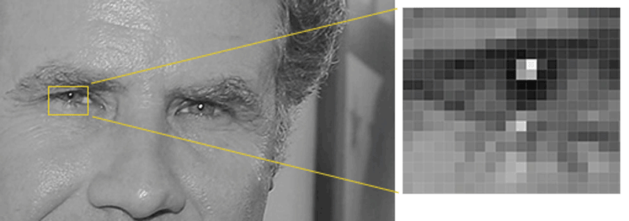

Aplicativo
Face Recognition
|
Luís Eduardo G. França Universidade Federal de Alagoas luiseduardogfranca@gmail.com |
Reconhecimento Facial
Passo a passo
Encontrando todas as faces
Posicionando e projetando faces
Codificando faces
Encontrando o nome da pessoa da codificação
Encontrando todas as faces
Utilizando um método método inventado em 2005 chamado HOG (Histogram of Oriented Gradients)
Para cada pixel é analisado todos o que o rodeiam diretamente
O pixel é substituído por uma seta (gradiente) apontando para o lado mais escuro

Neste exemplo foi analisado pequenos quadrados de 16x16 pixels e estes substituído pelo gradiente de maior influência
O que permitiu definir de forma mais precisa os traços na imagem com um número reduzido de informações

Posicionando e projetando faces
Estimando os pontos de referência na face

Centralizando a face

Codificando a face
Etapa de treinamento

É retornado a medida de cada parte capturada da face

Encontrando o nome da pessoa da codificação
Busca na base de dados por faces que possuem medidas mais próximas daquela que acabou de ser analisada
Aplicativo
Tecnologias utilizadas
"Ionic é a plataforma de aplicativos para desenvolvedores web. Crie incríveis aplicativos para dispositivos móveis, web e desktop com uma base de código compartilhada e padrões abertos da web."
Com Ionic foi possivel o desenvolvimento do aplicativo de forma eficiente.

"Flask é um pequeno framework web escrito em Python e baseado na biblioteca WSGI Werkzeug e na biblioteca de Jinja2".
Com o Flask foi possível o desenvolvimento de uma API RESTful.
Utilizando o aplicativo
1º) Adicione uma imagem para ser treinada

2º) Verifique se a imagem foi adicionada a lista de imagens

3º) Envie uma imagem para ser reconhecida